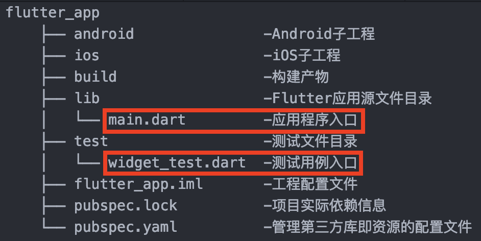
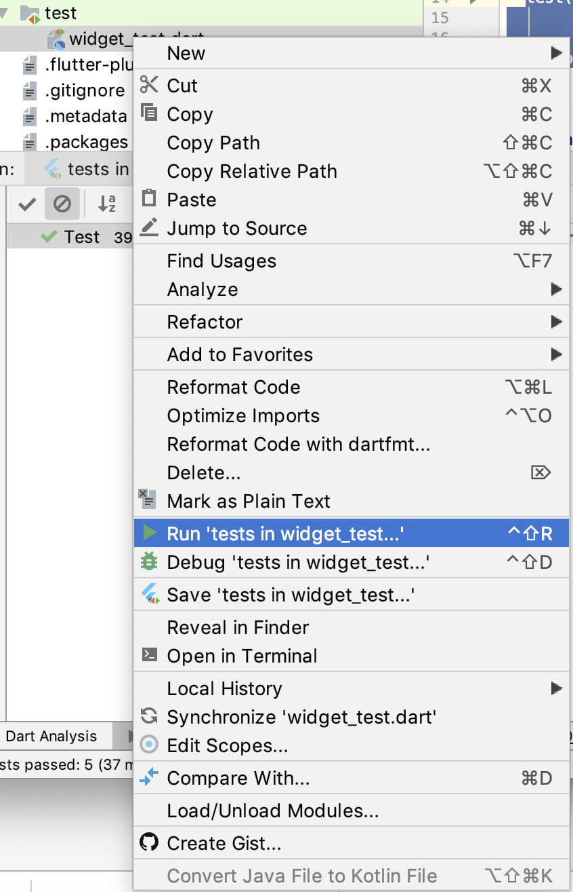
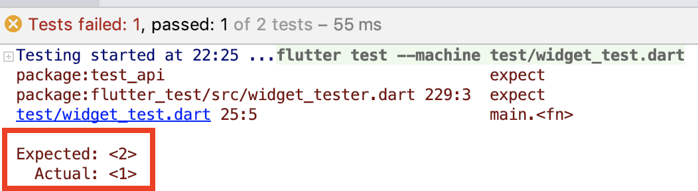
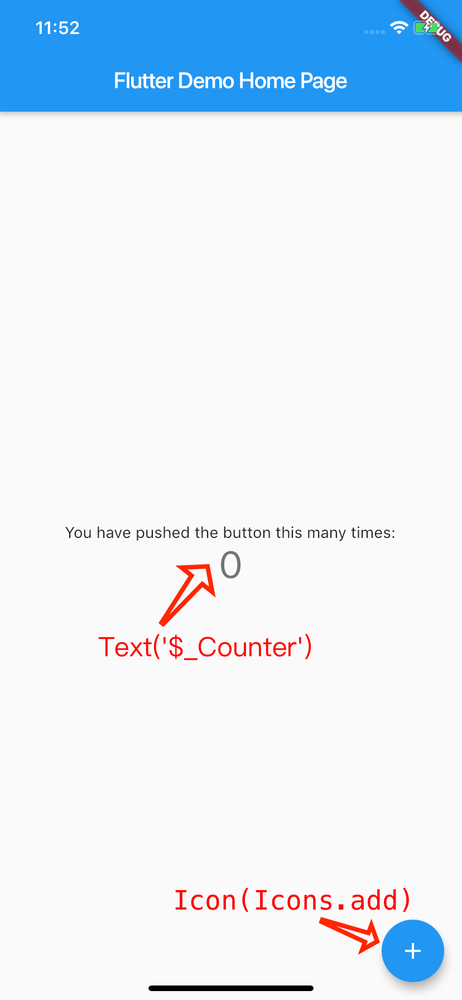

- 00 开篇词 为什么每一位大前端从业者都应该学习Flutter？.md
- 01 预习篇 · 从0开始搭建Flutter工程环境.md
- 02 预习篇 · Dart语言概览.md
- 03 深入理解跨平台方案的历史发展逻辑.md
- 04 Flutter区别于其他方案的关键技术是什么？.md
- 05 从标准模板入手，体会Flutter代码是如何运行在原生系统上的.md
- 06 基础语法与类型变量：Dart是如何表示信息的？.md
- 07 函数、类与运算符：Dart是如何处理信息的？.md
- 08 综合案例：掌握Dart核心特性.md
- 09 Widget，构建Flutter界面的基石.md
- 10 Widget中的State到底是什么？.md
- 11 提到生命周期，我们是在说什么？.md
- 12 经典控件（一）：文本、图片和按钮在Flutter中怎么用？.md
- 13 经典控件（二）：UITableView_ListView在Flutter中是什么？.md
- 14 经典布局：如何定义子控件在父容器中排版的位置？.md
- 15 组合与自绘，我该选用何种方式自定义Widget？.md
- 16 从夜间模式说起，如何定制不同风格的App主题？.md
- 17 依赖管理（一）：图片、配置和字体在Flutter中怎么用？.md
- 18 依赖管理（二）：第三方组件库在Flutter中要如何管理？.md
- 19 用户交互事件该如何响应？.md
- 20 关于跨组件传递数据，你只需要记住这三招.md
- 21 路由与导航，Flutter是这样实现页面切换的.md
- 22 如何构造炫酷的动画效果？.md
- 23 单线程模型怎么保证UI运行流畅？.md
- 24 HTTP网络编程与JSON解析.md
- 25 本地存储与数据库的使用和优化.md
- 26 如何在Dart层兼容Android_iOS平台特定实现？（一）.md
- 27 如何在Dart层兼容Android_iOS平台特定实现？（二）.md
- 28 如何在原生应用中混编Flutter工程？.md
- 29 混合开发，该用何种方案管理导航栈？.md
- 30 为什么需要做状态管理，怎么做？.md
- 31 如何实现原生推送能力？.md
- 32 适配国际化，除了多语言我们还需要注意什么_.md
- 33 如何适配不同分辨率的手机屏幕？.md
- 34 如何理解Flutter的编译模式？.md
- 35 Hot Reload是怎么做到的？.md
- 36 如何通过工具链优化开发调试效率？.md
- 37 如何检测并优化Flutter App的整体性能表现？.md
- 38 如何通过自动化测试提高交付质量？.md
- 39 线上出现问题，该如何做好异常捕获与信息采集？.md
- 40 衡量Flutter App线上质量，我们需要关注这三个指标.md
- 41 组件化和平台化，该如何组织合理稳定的Flutter工程结构？.md
- 42 如何构建高效的Flutter App打包发布环境？.md
- 43 如何构建自己的Flutter混合开发框架（一）？.md
- 44 如何构建自己的Flutter混合开发框架（二）？.md
- 特别放送 温故而知新，与你说说专栏的那些思考题.md
- 结束语 勿畏难，勿轻略.md
38 如何通过自动化测试提高交付质量？
你好，我是陈航。
在上一篇文章中，我与你分享了如何分析并优化Flutter应用的性能问题。通过在真机上以分析模式运行应用，我们可以借助于性能图层的帮助，找到引起性能瓶颈的两类问题，即GPU渲染问题和CPU执行耗时问题。然后，我们就可以使用Flutter提供的渲染开关和CPU帧图（火焰图），来检查应用中是否存在过度渲染或是代码执行耗时长的情况，从而去定位并着手解决应用的性能问题了。
在完成了应用的开发工作，并解决了代码中的逻辑问题和性能问题之后，接下来我们就需要测试验收应用的各项功能表现了。移动应用的测试工作量通常很大，这是因为为了验证真实用户的使用体验，测试往往需要跨越多个平台（Android/iOS）及不同的物理设备手动完成。
随着产品功能不断迭代累积，测试工作量和复杂度也随之大幅增长，手动测试变得越来越困难。那么，在为产品添加新功能，或者修改已有功能时，如何才能确保应用可以继续正常工作呢？
答案是，通过编写自动化测试用例。
所谓自动化测试，是把由人驱动的测试行为改为由机器执行。具体来说就是，通过精心设计的测试用例，由机器按照执行步骤对应用进行自动测试，并输出执行结果，最后根据测试用例定义的规则确定结果是否符合预期。
也就是说，自动化测试将重复的、机械的人工操作变为自动化的验证步骤，极大的节省人力、时间和硬件资源，从而提高了测试效率。
在自动化测试用例的编写上，Flutter提供了包括单元测试和UI测试的能力。其中，单元测试可以方便地验证单个函数、方法或类的行为，而UI测试则提供了与Widget进行交互的能力，确认其功能是否符合预期。
接下来，我们就具体看看这两种自动化测试用例的用法吧。
单元测试
单元测试是指，对软件中的最小可测试单元进行验证的方式，并通过验证结果来确定最小单元的行为是否与预期一致。所谓最小可测试单元，一般来说，就是人为规定的、最小的被测功能模块，比如语句、函数、方法或类。
在Flutter中编写单元测试用例，我们可以在pubspec.yaml文件中使用test包来完成。其中，test包提供了编写单元测试用例的核心框架，即定义、执行和验证。如下代码所示，就是test包的用法：
dev_dependencies:
test:
备注：test包的声明需要在dev_dependencies下完成，在这个标签下面定义的包只会在开发模式生效。
与Flutter应用通过main函数定义程序入口相同，Flutter单元测试用例也是通过main函数来定义测试入口的。不过，这两个程序入口的目录位置有些区别：应用程序的入口位于工程中的lib目录下，而测试用例的入口位于工程中的test目录下。
一个有着单元测试用例的Flutter工程目录结构，如下所示：

图1 Flutter工程目录结构
接下来，我们就可以在main.dart中声明一个用来测试的类了。在下面的例子中，我们声明了一个计数器类Counter，这个类可以支持以递增或递减的方式修改计数值count：
class Counter {
int count = 0;
void increase() => count++;
void decrease() => count--;
}
实现完待测试的类，我们就可以为它编写测试用例了。在Flutter中，测试用例的声明包含定义、执行和验证三个部分：定义和执行决定了被测试对象提供的、需要验证的最小可测单元；而验证则需要使用expect函数，将最小可测单元的执行结果与预期进行比较。
所以，在Flutter中编写一个测试用例，通常包含以下两大步骤：
- 实现一个包含定义、执行和验证步骤的测试用例；
- 将其包装在test内部，test是Flutter提供的测试用例封装类。
在下面的例子中，我们定义了两个测试用例，其中第一个用例用来验证调用increase函数后的计数器值是否为1，而第二个用例则用来判断1+1是否等于2：
import 'package:test/test.dart';
import 'package:flutter_app/main.dart';
void main() {
//第一个用例，判断Counter对象调用increase方法后是否等于1
test('Increase a counter value should be 1', () {
final counter = Counter();
counter.increase();
expect(counter.value, 1);
});
//第二个用例，判断1+1是否等于2
test('1+1 should be 2', () {
expect(1+1, 2);
});
}
选择widget_test.dart文件，在右键弹出的菜单中选择“Run ‘tests in widget_test’”，就可以启动测试用例了。

图2 启动测试用例入口
稍等片刻，控制台就会输出测试用例的执行结果了。当然，这两个用例都能通过测试：
22:05 Tests passed: 2
如果测试用例的执行结果是不通过，Flutter会给我们怎样的提示呢？我们试着修改一下第一个计数器递增的用例，将它的期望结果改为2：
test('Increase a counter value should be 1', () {
final counter = Counter();
counter.increase();
expect(counter.value, 2);//判断Counter对象调用increase后是否等于2
});
运行测试用例，可以看到，Flutter在执行完计数器的递增方法后，发现其结果1与预期的2不匹配，于是报错：

图3 单元测试失败示意图
上面的示例演示了单个测试用例的编写方法，而如果有多个测试用例，它们之间是存在关联关系的，我们可以在最外层使用group将它们组合在一起。
在下面的例子中，我们定义了计数器递增和计数器递减两个用例，验证递增的结果是否等于1的同时判断递减的结果是否等于-1，并把它们组合在了一起：
import 'package:test/test.dart';
import 'package:counter_app/counter.dart';
void main() {
//组合测试用例，判断Counter对象调用increase方法后是否等于1，并且判断Counter对象调用decrease方法后是否等于-1
group('Counter', () {
test('Increase a counter value should be 1', () {
final counter = Counter();
counter.increase();
expect(counter.value, 1);
});
test('Decrease a counter value should be -1', () {
final counter = Counter();
counter.decrease();
expect(counter.value, -1);
});
});
}
同样的，这两个测试用例的执行结果也是通过。
在对程序的内部功能进行单元测试时，我们还可能需要从外部依赖（比如Web服务）获取需要测试的数据。比如下面的例子，Todo对象的初始化就是通过Web服务返回的JSON实现的。考虑到调用Web服务的过程中可能会出错，所以我们还处理了请求码不等于200的其他异常情况：
import 'package:http/http.dart' as http;
class Todo {
final String title;
Todo({this.title});
//工厂类构造方法，将JSON转换为对象
factory Todo.fromJson(Map<String, dynamic> json) {
return Todo(
title: json['title'],
);
}
}
Future<Todo> fetchTodo(http.Client client) async {
final response =
await client.get('https://xxx.com/todos/1');
if (response.statusCode == 200) {
//请求成功，解析JSON
return Todo.fromJson(json.decode(response.body));
} else {
//请求失败，抛出异常
throw Exception('Failed to load post');
}
}
考虑到这些外部依赖并不是我们的程序所能控制的，因此很难覆盖所有可能的成功或失败方案。比如，对于一个正常运行的Web服务来说，我们基本不可能测试出fetchTodo这个接口是如何应对403或502状态码的。因此，更好的一个办法是，在测试用例中“模拟”这些外部依赖（对应本例即为http.client），让这些外部依赖可以返回特定结果。
在单元测试用例中模拟外部依赖，我们需要在pubspec.yaml文件中使用mockito包，以接口实现的方式定义外部依赖的接口：
dev_dependencies:
test:
mockito:
要使用mockito包来模拟fetchTodo的依赖http.client，我们首先需要定义一个继承自Mock（这个类可以模拟任何外部依赖），并以接口定义的方式实现了http.client的模拟类；然后，在测试用例的声明中，为其制定任意的接口返回。
在下面的例子中，我们定义了一个模拟类MockClient，这个类以接口声明的方式获取到了http.Client的外部接口。随后，我们就可以使用when语句，在其调用Web服务时，为其注入相应的数据返回了。在第一个用例中，我们为其注入了JSON结果；而在第二个用例中，我们为其注入了一个403的异常。
import 'package:mockito/mockito.dart';
import 'package:http/http.dart' as http;
class MockClient extends Mock implements http.Client {}
void main() {
group('fetchTodo', () {
test('returns a Todo if successful', () async {
final client = MockClient();
//使用Mockito注入请求成功的JSON字段
when(client.get('https://xxx.com/todos/1'))
.thenAnswer((_) async => http.Response('{"title": "Test"}', 200));
//验证请求结果是否为Todo实例
expect(await fetchTodo(client), isInstanceOf<Todo>());
});
test('throws an exception if error', () {
final client = MockClient();
//使用Mockito注入请求失败的Error
when(client.get('https://xxx.com/todos/1'))
.thenAnswer((_) async => http.Response('Forbidden', 403));
//验证请求结果是否抛出异常
expect(fetchTodo(client), throwsException);
});
});
}
运行这段测试用例，可以看到，我们在没有调用真实Web服务的情况下，成功模拟出了正常和异常两种结果，同样也是顺利通过验证了。
接下来，我们再看看UI测试吧。
UI测试
UI测试的目的是模仿真实用户的行为，即以真实用户的身份对应用程序执行UI交互操作，并涵盖各种用户流程。相比于单元测试，UI测试的覆盖范围更广、更关注流程和交互，可以找到单元测试期间无法找到的错误。
在Flutter中编写UI测试用例，我们需要在pubspec.yaml中使用flutter_test包，来提供编写UI测试的核心框架，即定义、执行和验证：
定义，即通过指定规则，找到UI测试用例需要验证的、特定的子Widget对象；
执行，意味着我们要在找到的子Widget对象中，施加用户交互事件；
验证，表示在施加了交互事件后，判断待验证的Widget对象的整体表现是否符合预期。
如下代码所示，就是flutter_test包的用法：
dev_dependencies:
flutter_test:
sdk: flutter
接下来，我以Flutter默认的计时器应用模板为例，与你说明UI测试用例的编写方法。
在计数器应用中，有两处地方会响应外部交互事件，包括响应用户点击行为的按钮Icon，与响应渲染刷新事件的文本Text。按钮点击后，计数器会累加，文本也随之刷新。

图4 计数器示例
为确保程序的功能正常，我们希望编写一个UI测试用例，来验证按钮的点击行为是否与文本的刷新行为完全匹配。
与单元测试使用test对用例进行包装类似，UI测试使用testWidgets对用例进行包装。testWidgets提供了tester参数，我们可以使用这个实例来操作需要测试的Widget对象。
在下面的代码中，我们首先声明了需要验证的MyApp对象。在通过pumpWidget触发其完成渲染后，使用find.text方法分别查找了字符串文本为0和1的Text控件，目的是验证响应刷新事件的文本Text的初始化状态是否为0。
随后，我们通过find.byIcon方法找到了按钮控件，并通过tester.tap方法对其施加了点击行为。在完成了点击后，我们使用tester.pump方法强制触发其完成渲染刷新。最后，我们使用了与验证Text初始化状态同样的语句，判断在响应了刷新事件后的文本Text其状态是否为1：
import 'package:flutter_test/flutter_test.dart';
import 'package:flutter_app_demox/main.dart';
void main() {
testWidgets('Counter increments UI test', (WidgetTester tester) async {
//声明所需要验证的Widget对象(即MyApp)，并触发其渲染
await tester.pumpWidget(MyApp());
//查找字符串文本为'0'的Widget，验证查找成功
expect(find.text('0'), findsOneWidget);
//查找字符串文本为'1'的Widget，验证查找失败
expect(find.text('1'), findsNothing);
//查找'+'按钮，施加点击行为
await tester.tap(find.byIcon(Icons.add));
//触发其渲染
await tester.pump();
//查找字符串文本为'0'的Widget，验证查找失败
expect(find.text('0'), findsNothing);
//查找字符串文本为'1'的Widget，验证查找成功
expect(find.text('1'), findsOneWidget);
});
}
运行这段UI测试用例代码，同样也顺利通过验证了。
除了点击事件之外，tester还支持其他的交互行为，比如文字输入enterText、拖动drag、长按longPress等，这里我就不再一一赘述了。如果你想深入理解这些内容，可以参考WidgetTester的官方文档进行学习。
总结
好了，今天的分享就到这里，我们总结一下今天的主要内容吧。
在Flutter中，自动化测试可以分为单元测试和UI测试。
单元测试的步骤，包括定义、执行和验证。通过单元测试用例，我们可以验证单个函数、方法或类，其行为表现是否与预期一致。而UI测试的步骤，同样是包括定义、执行和验证。我们可以通过模仿真实用户的行为，对应用进行交互操作，覆盖更广的流程。
如果测试对象存在像Web服务这样的外部依赖，为了让单元测试过程更为可控，我们可以使用mockito为其定制任意的数据返回，实现正常和异常两种测试用例。
需要注意的是，尽管UI测试扩大了应用的测试范围，可以找到单元测试期间无法找到的错误，不过相比于单元测试用例来说，UI测试用例的开发和维护代价非常高。因为一个移动应用最主要的功能其实就是UI，而UI的变化非常频繁，UI测试需要不断的维护才能保持稳定可用的状态。
“投入和回报”永远是考虑是否采用UI测试，以及采用何种级别的UI测试，需要最优先考虑的问题。我推荐的原则是，项目达到一定的规模，并且业务特征具有一定的延续规律性后，再考虑UI测试的必要性。
我把今天分享涉及的知识点打包到了GitHub中，你可以下载下来，反复运行几次，加深理解与记忆。
思考题
最后，我给你留下一道思考题吧。
在下面的代码中，我们定义了SharedPreferences的更新和递增方法。请你使用mockito模拟SharedPreferences的方式，来为这两个方法实现对应的单元测试用例。
Future<bool>updateSP(SharedPreferences prefs, int counter) async {
bool result = await prefs.setInt('counter', counter);
return result;
}
Future<int>increaseSPCounter(SharedPreferences prefs) async {
int counter = (prefs.getInt('counter') ?? 0) + 1;
await updateSP(prefs, counter);
return counter;
}
欢迎你在评论区给我留言分享你的观点，我会在下一篇文章中等待你！感谢你的收听，也欢迎你把这篇文章分享给更多的朋友一起阅读。
© 2019 - 2023 Liangliang Lee. Powered by gin and hexo-theme-book.